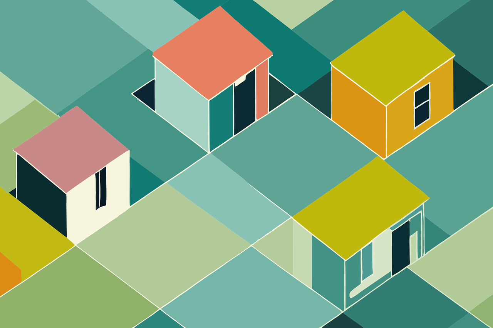

Este é um framework beta que tem por objetivo auxiliar na estilização de suas páginas web. Nosso lema é:
Continue lendo a documentação para descobrir como é fácil sua manipulação.
2º Passo: Escrever seu código HTML
3º Passo: Criar um arquivo .js e importar a função tag() e estilizar seu site
E PRONTO!Observações:
Não recomendamos que faça o reset das estilizações usando *, igual o exemplo abaixo:
* { margin: 0; padding: 0; }
Recomendamos efetuar tal configuração usando body, conforme o exemplo abaixo:
body { margin: 0; padding: 0; }

Bora codar!
Recomendamos criar um arquivo project.js
Logo abaixo, deixei o código javascript que utilizamos para estilizar essa página WEB:
Começamos importando a biblioteca:
import { tag as s, responsive as r } from "./jseasy.js";
Para ficar mais fácil de identicar a tag, por padrão criamos um comentário mostrando a que tag, .class, #id a função abaixo se refere:
/** ---- Body */
Primeiro definimos qual tag, .class ou #id será estilizada. No exemplo abaixo, está sendo utilizada a tag body.
Seu código css, precisa estar dentro do par de crase ` ...código `:
s("body", `
margin: 0;
padding: 0;
font-family: "Poppins", cursive;
`)
Esse é exemplo beta, de uma função de estilização para tornar a página responsiva.
r(`
@media screen and (max-width: 900px) {
main {
margin: 1rem;
width: calc(100% - 2rem);
}
}
`)
import {
tag as s,
responsive as r
} from "./jseasy.js";
/** ---- Body */
s("body", `
margin: 0;
padding: 0;
font-family: "Poppins", cursive;
`)
/** --- Header */
s("header", `
padding: 2rem 0;
background: #7209b7;
color: white;
text-align: center;
`)
/** ---- H1 */
s("h1", `
font-size: 36px;
`)
/** ---- Important */
s(".important", `
padding: 5rem;
`)
/** ---- Main */
s("main", `
margin: 50px auto;
width: 900px;
`)
r(`
@media screen and (max-width: 900px) {
main {
margin: 1rem;
width: calc(100% - 2rem);
}
}
`)
/** ---- Button */
s("button", `
padding: .5rem 1rem;
font-weight: bold;
border: none;
transition: linear .3s background;
`)
s("button:hover", `
background: #7209b7;
color: #fff;
box-shadow: 3px 3px 0 #fff;
cursor: pointer;
`)
/** --- .button */
s(".button", `
display: flex;
align-items: center;
gap: 7px;
`)
r(`
@media screen and (max-width: 900px) {
.button {
flex-wrap: wrap;
gap: 0;
}
}
`)
/** ---- A */
s("a", `
text-decoration: none;
`)
/** ---- Style */
s(".style", `
width: 100%;
display: flex;
flex-wrap: wrap;
gap: 10px;
`)
/** ---- Card */
s(".card", `
width: min(425px, 100%);
background: #999;
border-radius: 10px;
padding: 10px;
color: white
`)
/** ---- Details */
s(".details", `
width: 100%;
`)
/** ---- Image */
s("img", `
max-width: 100%;
border-radius: 20px;
margin: 1rem 0;
`)
/** ---- .card-code */
s(".card-code", `
background: #888;
padding: .5rem;
border-radius: 10px
`)
/** ---- .code-color
s(".code-color", `
background: #777;
`)
r(`
@media screen and (max-width: 660px) {
.pre {
font-size: 14px;
}
}
@media screen and (max-width: 470px) {
.pre {
font-size: 12px;
}
}
`)